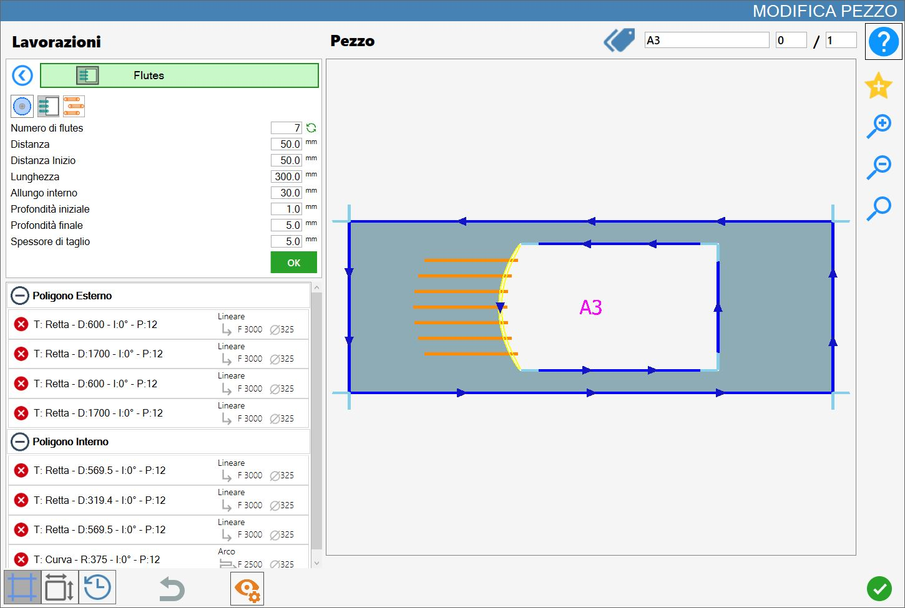

Esta función utiliza la fresa montada sobre un corte recto o curvo seleccionado para realizar las ranuras de drenaje.

Parámetros
El resultado se define mediante los parámetros siguientes.
Número de ranuras | Indica cuántas ranuras de drenaje deben aplicarse al mecanizado actual sobre el corte seleccionado. |
Recalcular número | |
Longitud | Indica hasta qué distancia penetrarán las ranuras en el corte. |
Distancia | Este valor representa la distancia entre las ranuras y tiene en cuenta el diámetro de la herramienta montada. |
Distancia inicial | Este valor define la distancia entre los vértices de las ranuras interiores de la pieza, regulando el espacio vacío que las separa. |
Alargamiento interior | Indica hasta qué distancia se extenderán las ranuras más allá del corte de referencia. |
Profundidad inicial | Penetración en el material en el punto inicial de la ranura de drenaje. |
Profundidad final | Penetración en el material en el punto final de la ranura de drenaje. |
Tipo de ranuras en arcos | Para las ranuras sobre curvas hay tres modos disponibles, que se ilustran a continuación. |
Espesor de corte | Para las ranuras insertadas en modo disco está disponible la variable de espesor de corte. |
Solapamiento del goterón | Para las ranuras insertadas en modo relleno se puede modificar el porcentaje. |
Recalcular número
Al pulsar el botón situado a la derecha del número de ranuras, el corte seleccionado se rellena con el mayor número posible de ranuras en función del valor de los demás parámetros.
En la siguiente imagen de ejemplo se puede observar el resultado del relleno de ranuras, en comparación con la primera imagen al inicio del capítulo.

Modo de inserción de ranuras
Estas son las opciones de inserción de las ranuras:
 | Inserción por número |
 | Inserción por relleno |
 | Modo disco |
 | Modo fresa |
Modo de ranuras en arcos
Cuando se selecciona un corte curvo de un polígono, se muestra un nuevo parámetro que permite elegir uno de tres valores:
 | Radiales |
 | Alineación con el arco |
 | Alineación con la tangente |
Modo 1: Radiales
En este modo, las ranuras comparten un punto de origen y son perpendiculares a la tangente correspondiente en el corte curvo seleccionado.

Modo 2: Alineación con el arco
En este modo, las ranuras son paralelas entre sí y están alineadas con el arco tanto en la distancia como en el alargamiento interior.

Modo 3: Alineación con la tangente
En este modo, las ranuras son paralelas entre sí y están alineadas con el arco en el alargamiento interior, mientras que se prolongan hasta alcanzar la tangente situada a la distancia especificada por el valor de longitud.

Ejecución del mecanizado
Es posible aplicar el mecanizado pulsando el botón situado a la izquierda del corte correspondiente en la lista de polígonos.
Un icono rojo con una «X» indica que el mecanizado no puede aplicarse al corte deseado.
Una vez obtenido el resultado deseado, que se visualiza y actualiza constantemente en la vista previa del mecanizado, el operador puede confirmar la operación pulsando el botón verde «OK», situado justo debajo de los parámetros configurados.
Las ranuras mostradas en la vista previa se aplicarán al corte seleccionado: su color pasará a verde oscuro, tanto en la vista previa como posteriormente en el área de trabajo, para indicar que se han aplicado.

La lista de cortes situada en el lado izquierdo también se actualizará según el nuevo mecanizado aplicado y los parámetros de las ranuras.
Es posible aplicar varios mecanizados de este tipo a un único corte, siempre que sus parámetros no se repitan.